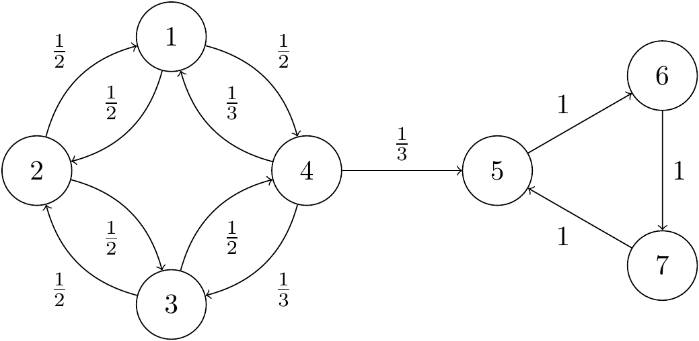

Section 10 Definitions and properties
When thinking about the long-run behaviour of Markov chains, there are two different types of states:
- Recurrent states which we always return to again and again;
- Transient states which we may return to a few times, but eventually we will leave and never come back.
The official definition is as follows; we will show that other properties follow from this.
Definition 10.1 Let \((X_n)\) be a Markov chain on a state space \(\mathcal S\). For \(i \in \mathcal S\), let \(m_i\) be the return probability \[ m_i = \mathbb P(X_n = i \text{ for some $n \geq 1$} \mid X_0 = i) . \] If \(m_i = 1\), we say that state \(i\) is recurrent; if \(m_i < 1\), we say that state \(i\) is transient.
Theorem 10.1 Consider a Markov chain with transition matrix \(\mathsf P\) and state space \(\mathcal S\).
- If the state \(i\) is recurrent, then \(\sum_{n=1}^\infty p_{ii}^{(n)} = \infty\), and we return to state \(i\) infinitely many times with probability \(1\).
- If the state \(i\) is transient, then \(\sum_{n=1}^\infty p_{ii}^{(n)} < \infty\), and we return to state \(i\) infinitely many times with probability \(0\).
Here \(\sum_{n=1}^\infty p_{ii}^{(n)}\) is the expected number of returns to \(i\) starting from \(i\).
Proof. Suppose state \(i\) is recurrent, so the probability we return to \(i\) is \(m_i = 1\). By the Markov property, we can then restart the chain from \(i\); the probability we return to \(i\) is again \(1\). Repeating this, we visit infinitely often with probability \(1\). In particular, the expected number of visits to \(i\) starting from \(i\) is infinite, and this expectation is \(\sum_{n=1}^\infty p_{ii}^{(n)} = \infty\).
Suppose state \(i\) is transient. The probability we return to \(i\) is \(m_i < 1\). So the probability we return to \(i\) exactly \(r\) times is \[ \mathbb P \big((\text{number of returns to $i$}) = r\big) = m_i^r(1-m_i) , \] since we return on the first \(r\) occasions, but then fail to return again. This is a geometric distribution \(\text{Geom(1-m_i)}\) (the version with support \(\{0,1,2,\dots\}\)). Since the expectation of a \(\text{Geom}(p)\) random variable is \((1 - p)/p\), the expected number of returns is \[ \mathbb E(\text{number of returns to $i$}) = \sum_{n=1}^\infty p_{ii}^{(n)} = \frac{1 - (1 - m_i)}{1 - m_i} = \frac{m_i}{1 - m_i} , \] which is finite, since \(m_i <1\). Since the expected number of returns is finite, the probability we return infinitely many times must be \(0\).
::: {.example} We saw this example in Lecture 7:

For states \(5,6\) and \(7\), it’s clear that the return probability is \(1\), since the Markov chain cycles around the triangle, so these states are recurrent.
From state \(4\), we might go straight to state \(5\), in which case we can’t come back, so \(m_4 \leq 1 - p_{45} = \frac23\). So state \(4\) is transient.
Similarly, \(m_1 \leq 1 - p_{14}p_{45} = \frac56\), because if we move from \(1\) to \(4\) to \(5\), we definitely won’t come back to \(1\), so state \(1\) is transient too. By the same argument, \(m_3 \leq 1 - p_{34}p_{45} = \frac56\), and \(m_2 \leq 1 - p_{21}p_{14}p_{45} = \frac{11}{12}\), so these states are both transient too. \end{example}
Notice that the communicating class \(\{1,2,3,4\}\) is all transient, while the communicating class \(\{5,6,7\}\) is all recurrent. We shall return to this point shortly.
10.1 Recurrence and transience of classes
We could find whether each state is transient or recurrent by calculating (or bounding) all the return probabilities \(m_i\), using the methods for the last lecture. But the following two theorems will give some convenient short-cuts.
Theorem 10.2 Within a communicating class, either every state is transient or every state is recurrent.
Formally: Let \(i, j \in \mathcal S\) be such that \(i \leftrightarrow j\). If \(i\) is recurrent, then so is \(j\); while if \(i\) is transient, then so is \(j\).
For this reason, we can refer to communicating classes as recurrent classes and transient classes. If a Markov chain is irreducible, we can refer to it as a recurrent or transient Markov chain.
Proof. First part. Suppose \(i \leftrightarrow j\) and \(i\) is recurrent. Then, for some \(m\), \(n\) we have \(p_{ij}^{(n)}, p_{ji}^{(m)} > 0\), and, by the Chapman–Kolmogorov equations, \[ \sum_{r=1}^\infty p_{jj}^{(n+m+r)} \geq \sum_{r=1}^\infty p_{ji}^{(m)}p_{ii}^{(r)} p_{ij}^{(n)} = p_{ji}^{(m)} \left(\sum_{r=1}^\infty p_{ii}^{(r)} \right) p_{ij}^{(n)} . \] If \(i\) is recurrent, then \(\sum_r p_{ii}^{(r)} = \infty\); therefore we must have \(\sum_r p_{jj}^{(n+m+r)} = \infty\), meaning \(\sum_s p_{jj}^{(s)} = \infty\), and \(j\) is recurrent.
Second part. By the above, we cannot have a recurrent \(j\) communicating with a transient \(i\); so if \(i\) is transient and \(i \leftrightarrow j\), then \(j\) must be transient also.
Theorem 10.3 Every non-closed communicating class is transient. Every finite closed communicating class is recurrent.
This theorem completely categorises the transience and recurrence of classes, with rare exception of infinite closed classes, which can require further examination.
Proof. First part. Suppose \(i\) is in a non-closed communicating class, so for some \(j\) we have \(i \to j\), so \(p_{ij}^{(n)} > 0\) for some \(n\), but \(j \not\to i\). The probability we return to \(i\) after time \(n\) is \[\begin{align*} \mathbb P(\text{return to } &i \text{ after time $n$} \mid X_0 = i) \\ &= p_{ij}^{(n)}\,\mathbb P(\text{return to $i$ after time $n$} \mid X_n = j) \\ &\qquad {}+ \big(1 - p_{ij}^{(n)}\big)\,\mathbb P(\text{return to $i$ after time $n$} \mid X_n \neq j, X_0 = i) \\ &\leq \mathbb P(\text{return to $i$ after time $n$} \mid X_n = j) + \big(1 - p_{ij}^{(n)}\big) \\ &\leq 0 + \big(1 - p_{ij}^{(n)}\big) \\ &< 1. \end{align*}\] So \(i\) is transient.
Second part. Suppose the class \(C\) is finite and closed. Then for some \(i \in C\), the probability that we return to \(i\) infinitely many times must be strictly positive, as we are going to stay in \(C\) forever. Then that state \(i\) is not transient, so it must be recurrent, meaning the whole class is recurrent.
Going back to the previous example, we see that the class \(\{5,6,7\}\) is closed and finite, and therefore recurrent, while class \(\{1,2,3,4\}\) is not closed and therefore transient. This is much less effort than the previous method!
10.2 Positive and null recurrence
It can be useful to further divide recurrent classes, where the return probability \(m_i = 1\), by whether the expected return time \(\mu_i\) is finite or not.
Definition 10.2 Let \((X_n)\) be a Markov chain on a state space \(\mathcal S\). Let \(i \in \mathcal S\) be a recurrent state, and let \(\mu_i\) be the expected return time. If \(\mu_i < \infty\), we say that state \(i\) is positive recurrent; if \(\mu_i = \infty\), we say that state \(i\) is null recurrent.
The following facts are not difficult to prove, in a similar way to the previous results.
- In a recurrent class, either all states are positive recurrent or all states are null recurrent. So we can refer to a positive recurrent or null recurrent class, and an irreducible Markov chain can be a positive recurrent or null recurrent Markov chain.
- All finite closed classes are positive recurrent.
Therefore, we have:
- non-closed classes are transient;
- finite closed classes are positive recurrent;
- infinite closed classes can be positive recurrent, null recurrent, or transient.
In the last lecture, we looked at return times for the simple random walk, which is an irreducible Markov chain (provided \(p \neq 0,1\)). We saw that \(m_i = 1\) for \(p = 1/2\), that \(m_i < 1\) for \(p \neq 1/2\), and that \(\mu_i = \infty\) always. This means that, for \(p \neq \frac12\), the simple random walk is transient, while for \(p = \frac12\) the simple symmetric random walk is null recurrent.
We can also consider the simple symmetric random walk in \(d\)-dimensions, on \(\mathbb Z^d\). At each step we pick one of the coordinates and increase or decrease it by one; each of the \(2d\) possibilities having probability \(1/2d\). We have seen that for \(d=1\) this is null recurrent. A famous result states it is null recurrent for \(d = 2\) also, but is transient for \(d \geq 3\). (It’s been suggested this is why cars often crash into each other, but aeroplanes very rarely do.)